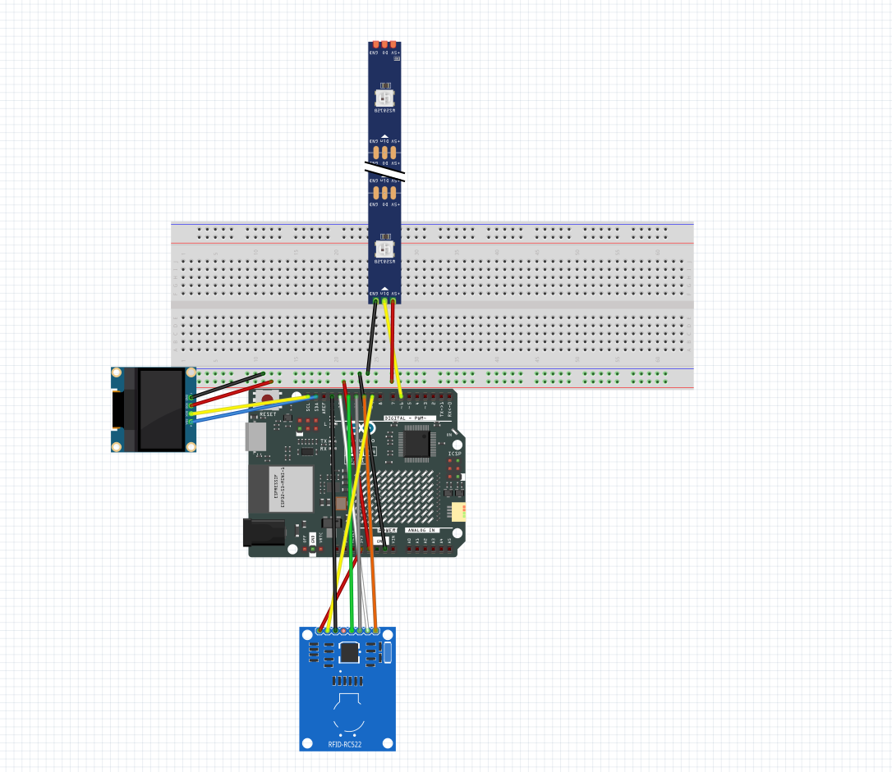
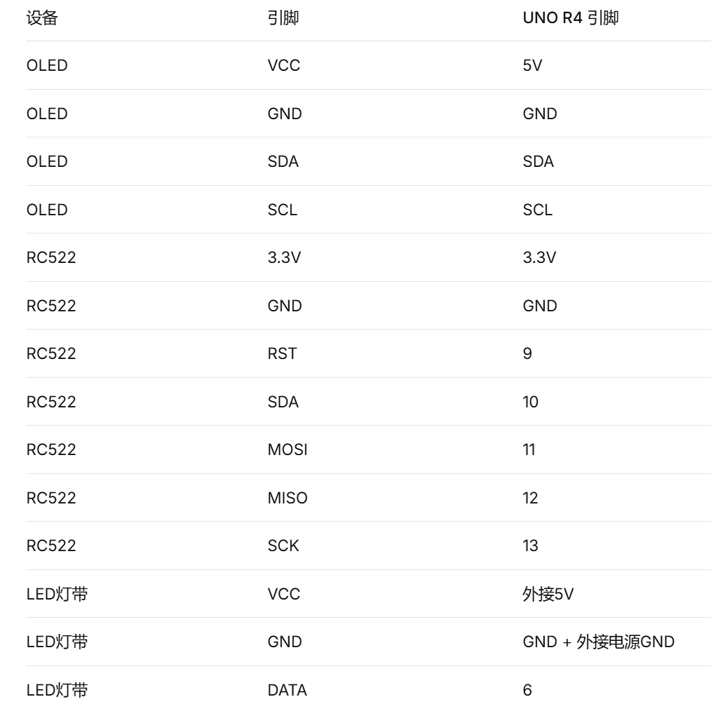
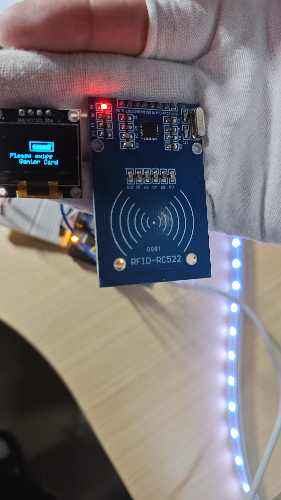
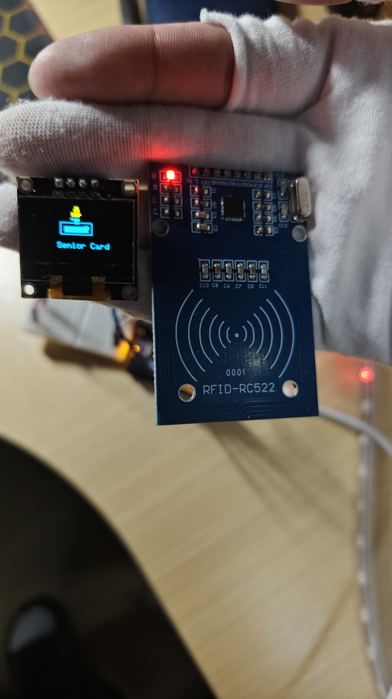

Exercise 3: Arduino Output&Input
Use various sensors to collect environmental data and perform initial processing.
Exercise Content
Do one project which contain switch, sensor(photosensitive sensor, temperature ,etc);
Build one environment monitoring device
Build one environment monitoring device
Assignment Content
📄 Arduino Output&Input - Interactive Visualization Project
1. Project Introduction
Implemented by Arduino R4 WiFi board, OLED screen, RFID RF module (MFRC522), and WS2812 LED strip. This program can recognize the UID of different cards and respond accordingly. Therefore, different feedback can be obtained by scanning different cards. As our final task is to design an autonomous driving interaction signal system for the elderly (or other special groups), we have currently created cards and interactions corresponding to the elderly
2. Code
// ==================== 老人卡专用代码 ====================
// 功能：RFID识别老人卡 -> OLED显示动画 + LED灯带红色旋转效果
// 连线：
// OLED (I2C): SDA->A4, SCL->A5 (UNO)
// RFID: SS->10, RST->9, MOSI->11, MISO->12, SCK->13
// LED灯带: DATA->6
#include <Wire.h>
#include <Adafruit_GFX.h>
#include <Adafruit_SSD1306.h>
#include <SPI.h>
#include <MFRC522.h>
#include <Adafruit_NeoPixel.h>
// ---------- OLED 配置 ----------
#define SCREEN_WIDTH 128
#define SCREEN_HEIGHT 64
#define OLED_RESET -1
#define SCREEN_ADDRESS 0x3C
Adafruit_SSD1306 display(SCREEN_WIDTH, SCREEN_HEIGHT, &Wire, OLED_RESET);
// ---------- RFID 配置 ----------
#define RST_PIN 9
#define SS_PIN 10
MFRC522 mfrc522(SS_PIN, RST_PIN);
// ---------- LED灯带配置 ----------
#define LED_PIN 6
#define LED_COUNT 60
Adafruit_NeoPixel strip(LED_COUNT, LED_PIN, NEO_GRB + NEO_KHZ800);
// ---------- 老人卡UID ----------
byte seniorCardUID[] = {0x32, 0x49, 0xCF, 0x06};
// ---------- 状态与动画变量 ----------
bool seniorCardDetected = false; // 是否检测到老人卡
unsigned long cardDetectedTime = 0; // 检测到卡的时间
unsigned long lastAnimationUpdate = 0;
unsigned long lastLedUpdate = 0;
const unsigned long ANIMATION_INTERVAL = 100; // 动画更新间隔
const unsigned long LED_INTERVAL = 50; // LED更新间隔
int animationFrame = 0;
int rotatingPosition = 0;
// ---------- 函数声明 ----------
bool compareUID(byte* uid1, byte* uid2, int length);
void updateAnimation();
void drawSeniorCardAnimation();
void drawSmallCard(int x, int y);
void drawMiniSenior(int x, int y);
void updateLEDs();
void rotatingEffect(int r, int g, int b);
// ==================== 初始化 ====================
void setup() {
Serial.begin(115200);
// 初始化OLED
if(!display.begin(SSD1306_SWITCHCAPVCC, SCREEN_ADDRESS)) {
Serial.println(F("OLED初始化失败"));
for(;;);
}
display.clearDisplay();
display.setTextColor(SSD1306_WHITE);
display.cp437(true);
display.display();
// 初始化RFID
SPI.begin();
mfrc522.PCD_Init();
// 初始化LED灯带
strip.begin();
strip.show();
strip.setBrightness(50);
Serial.println(F("老人卡系统就绪 - 请刷老人卡"));
}
// ==================== 主循环 ====================
void loop() {
// 1. 检测老人卡
checkForSeniorCard();
// 2. 更新OLED动画（非阻塞）
if (millis() - lastAnimationUpdate >= ANIMATION_INTERVAL) {
lastAnimationUpdate = millis();
updateAnimation();
}
// 3. 更新LED灯带效果（非阻塞）
if (millis() - lastLedUpdate >= LED_INTERVAL) {
lastLedUpdate = millis();
updateLEDs();
}
// 4. 检测到老人卡后，5秒自动清除显示（超时可调）
if (seniorCardDetected && (millis() - cardDetectedTime > 5000)) {
seniorCardDetected = false;
}
}
// ==================== 老人卡检测 ====================
void checkForSeniorCard() {
if (!mfrc522.PICC_IsNewCardPresent()) return;
if (!mfrc522.PICC_ReadCardSerial()) return;
// 比较是否为老人卡
if (compareUID(mfrc522.uid.uidByte, seniorCardUID, 4)) {
seniorCardDetected = true;
cardDetectedTime = millis();
Serial.println(F("检测到老人卡！"));
}
mfrc522.PICC_HaltA();
}
// ==================== UID比较 ====================
bool compareUID(byte* uid1, byte* uid2, int length) {
for (int i = 0; i < length; i++) {
if (uid1[i] != uid2[i]) return false;
}
return true;
}
// ==================== OLED动画更新 ====================
void updateAnimation() {
display.clearDisplay();
if (seniorCardDetected) {
drawSeniorCardAnimation(); // 显示老人卡动画
} else {
drawNoCardAnimation(); // 待机动画：摆动卡片 + 提示
}
display.display();
animationFrame++;
}
// 待机动画（无卡片时）
void drawNoCardAnimation() {
static int cardX = 44;
static int swingDir = 1;
cardX += swingDir * 2;
if (cardX <= 30 || cardX >= 60) swingDir *= -1;
drawSmallCard(cardX, 20);
display.setTextSize(1);
display.setCursor(20, 40);
display.print("Please swipe");
display.setCursor(35, 50);
display.print("Senior Card");
}
// 老人卡动画（卡片 + 老人图标 + 文字）
void drawSeniorCardAnimation() {
drawSmallCard(44, 20);
drawMiniSenior(64, 5);
display.setTextSize(1);
display.setCursor(40, 45);
display.print("Senior Card");
}
// 小卡片绘制
void drawSmallCard(int x, int y) {
display.drawRect(x, y, 40, 15, SSD1306_WHITE);
display.fillRect(x + 5, y + 5, 30, 7, SSD1306_WHITE);
display.drawRect(x + 30, y + 4, 6, 4, SSD1306_WHITE);
}
// 老人图标（带拐杖和行走动画）
void drawMiniSenior(int x, int y) {
int animPhase = animationFrame % 20;
display.fillRect(x - 2, y - 2, 5, 2, SSD1306_WHITE);
display.fillCircle(x, y + 2, 3, SSD1306_WHITE);
display.fillRect(x - 1, y + 1, 1, 1, SSD1306_BLACK);
display.fillRect(x + 1, y + 1, 1, 1, SSD1306_BLACK);
display.drawLine(x - 1, y + 3, x + 1, y + 3, SSD1306_BLACK);
display.fillRect(x - 3, y + 5, 7, 8, SSD1306_WHITE);
// 手臂摆动
if (animPhase < 10) {
display.fillRect(x - 5, y + 6, 3, 2, SSD1306_WHITE);
display.fillRect(x + 3, y + 6, 3, 2, SSD1306_WHITE);
} else {
display.fillRect(x - 5, y + 8, 3, 2, SSD1306_WHITE);
display.fillRect(x + 3, y + 8, 3, 2, SSD1306_WHITE);
}
// 腿步
if (animPhase < 10) {
display.fillRect(x - 2, y + 13, 2, 4, SSD1306_WHITE);
display.fillRect(x + 1, y + 13, 2, 4, SSD1306_WHITE);
} else {
display.fillRect(x - 3, y + 13, 2, 4, SSD1306_WHITE);
display.fillRect(x + 2, y + 13, 2, 4, SSD1306_WHITE);
}
// 拐杖
if (animPhase < 10) {
display.fillRect(x - 6, y + 5, 2, 6, SSD1306_WHITE);
display.fillRect(x - 7, y + 10, 4, 2, SSD1306_WHITE);
} else {
display.fillRect(x - 7, y + 3, 2, 6, SSD1306_WHITE);
display.fillRect(x - 8, y + 8, 4, 2, SSD1306_WHITE);
}
display.drawLine(x - 1, y + 5, x + 1, y + 5, SSD1306_BLACK);
}
// ==================== LED灯带效果（老人卡 = 红色旋转） ====================
void updateLEDs() {
if (seniorCardDetected) {
// 老人卡激活时：红色旋转效果
rotatingEffect(255, 0, 0);
} else {
// 待机：呼吸灯效果（柔和白色）
breathingEffect();
}
strip.show();
}
// 红色旋转效果（老人卡专用）
void rotatingEffect(int r, int g, int b) {
rotatingPosition = (rotatingPosition + 2) % LED_COUNT;
// 清空所有LED
for (int i = 0; i < LED_COUNT; i++) strip.setPixelColor(i, 0);
// 主光带
for (int i = 0; i < 12; i++) {
int pos = (rotatingPosition - i + LED_COUNT) % LED_COUNT;
int brightness = 255 - (i * 20);
if (brightness < 0) brightness = 0;
int currentR = (r * brightness) / 255;
int currentG = (g * brightness) / 255;
int currentB = (b * brightness) / 255;
strip.setPixelColor(pos, strip.Color(currentR, currentG, currentB));
}
// 对称光带（增加视觉丰富度）
int secondPos = (rotatingPosition + LED_COUNT/2) % LED_COUNT;
for (int i = 0; i < 12; i++) {
int pos = (secondPos - i + LED_COUNT) % LED_COUNT;
int brightness = 255 - (i * 20);
if (brightness < 0) brightness = 0;
int currentR = (r * brightness) / 255;
int currentG = (g * brightness) / 255;
int currentB = (b * brightness) / 255;
uint32_t existing = strip.getPixelColor(pos);
if (existing == 0) {
strip.setPixelColor(pos, strip.Color(currentR, currentG, currentB));
} else {
int er = (existing >> 16) & 0xFF;
int eg = (existing >> 8) & 0xFF;
int eb = existing & 0xFF;
strip.setPixelColor(pos, strip.Color(max(er, currentR), max(eg, currentG), max(eb, currentB)));
}
}
}
// 呼吸灯效果（待机）
void breathingEffect() {
static int brightness = 0;
static int direction = 1;
brightness += direction * 3;
if (brightness >= 150) direction = -1;
if (brightness <= 0) direction = 1;
for (int i = 0; i < LED_COUNT; i++) {
strip.setPixelColor(i, strip.Color(brightness, brightness, brightness));
}
}3. Circuit diagram


4. Physical connection mode
Standby mode

Activation mode

5. Effect display